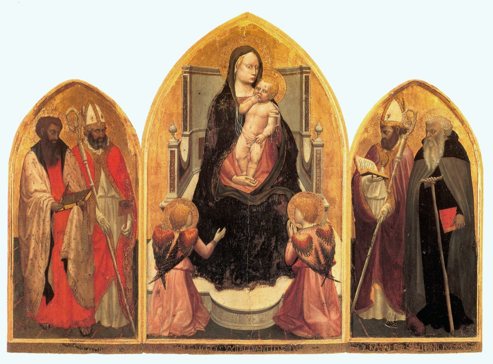

1422 · Œuvre 1
Le Triptyque de San Giovenale
Église San Giovenale, Cascia di Reggello
À regarder
La Vierge et l’Enfant, les anges, les saints latéraux et la manière dont les figures occupent leur place.
La Vierge et l’Enfant, les anges, les saints latéraux et la manière dont les figures occupent leur place.
À comprendre
Les corps gagnent en poids et en volume ; la lumière commence à leur donner une présence concrète.
Les corps gagnent en poids et en volume ; la lumière commence à leur donner une présence concrète.
Source : Reproduction photographique : auto-numérisation · Domaine public